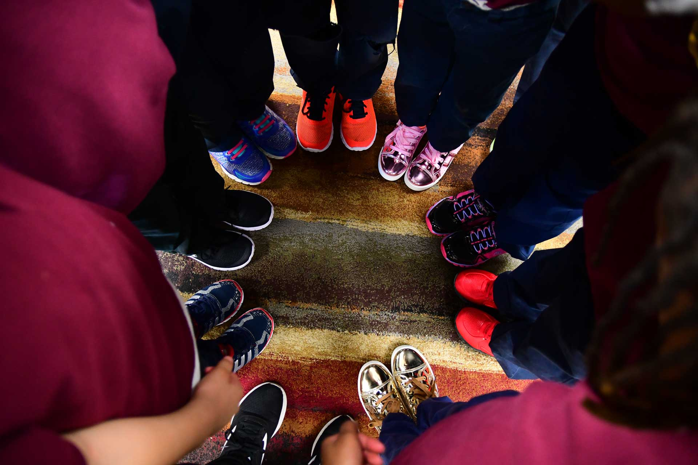

About 30 million tires are thrown away every year in Kenya.
They end up in landfills where they release toxic chemicals as time passes.
These leads to pollution of environment especially water pollution.
Our company seeks to address this problem by recycling these worn out tires to make affordable yet long lasting
shoes for the common mwananchi.
We are committed to community social responsibility.Our shoes are hand crafted by local artisans
and the company is committed to a safe,healthy and supportive work environment.
Overcrowded landfills can't handle the million of tyres that are thrown away each year.
Instead some people take to illegally dumping their old tyres,and they tend to do so in
low-income neighbourhood creating more and environmental and health risks for those who
are already more to them.But here is the good news!Car tyres are actually recycled.
Instead of burning we use them to make furniture and bag.We also make shoes which are later distributed
to the beneficiaries who are homeless and also in school to needy children.

Our products are available in:
My mission is to reduce environmental and water pollution caused by disposal scrap car tyres and make products through them.